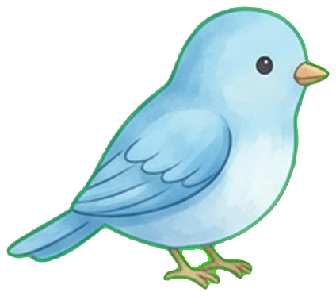
CHU THIÊN DƯƠNG · RIO
Mừng con đón tuổi đầu tiên
Một năm của những cái ôm, những nụ cười
và vô vàn điều đầu tiên đáng nhớ.
Gia đình trân trọng kính mời ông bà, cô chú, anh chị
đến chung vui trong tiệc thôi nôi của Rio.
Vé mời chung vui
18:00 · Đón khách từ 17:30
365ngày lớn lên
trong yêu thương
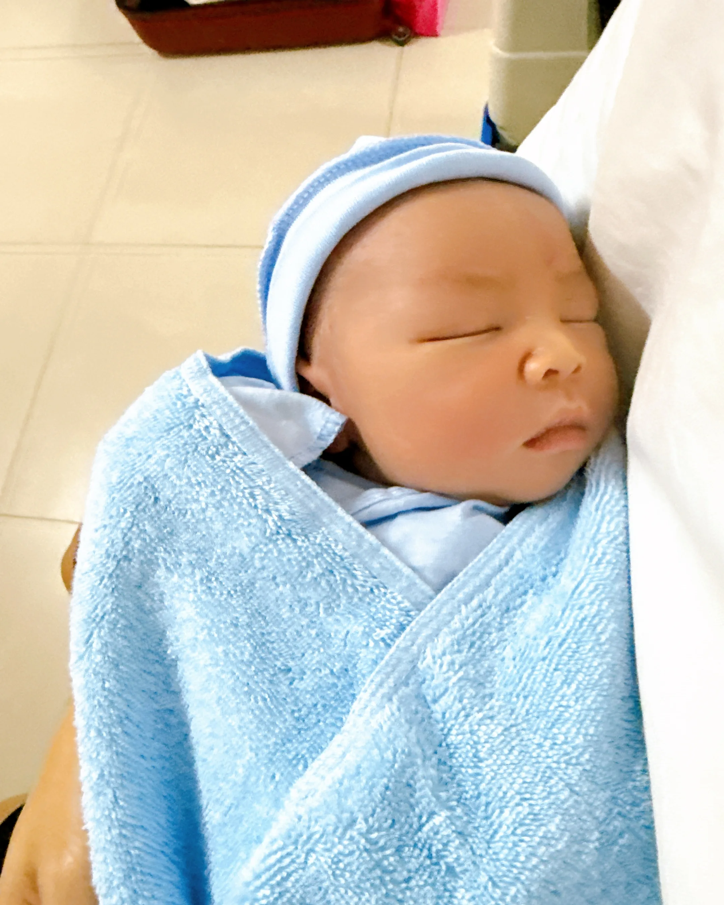
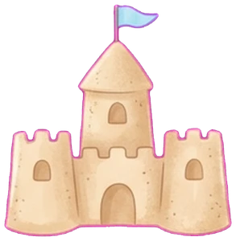
Ngày đầu bé bỏng của Rio
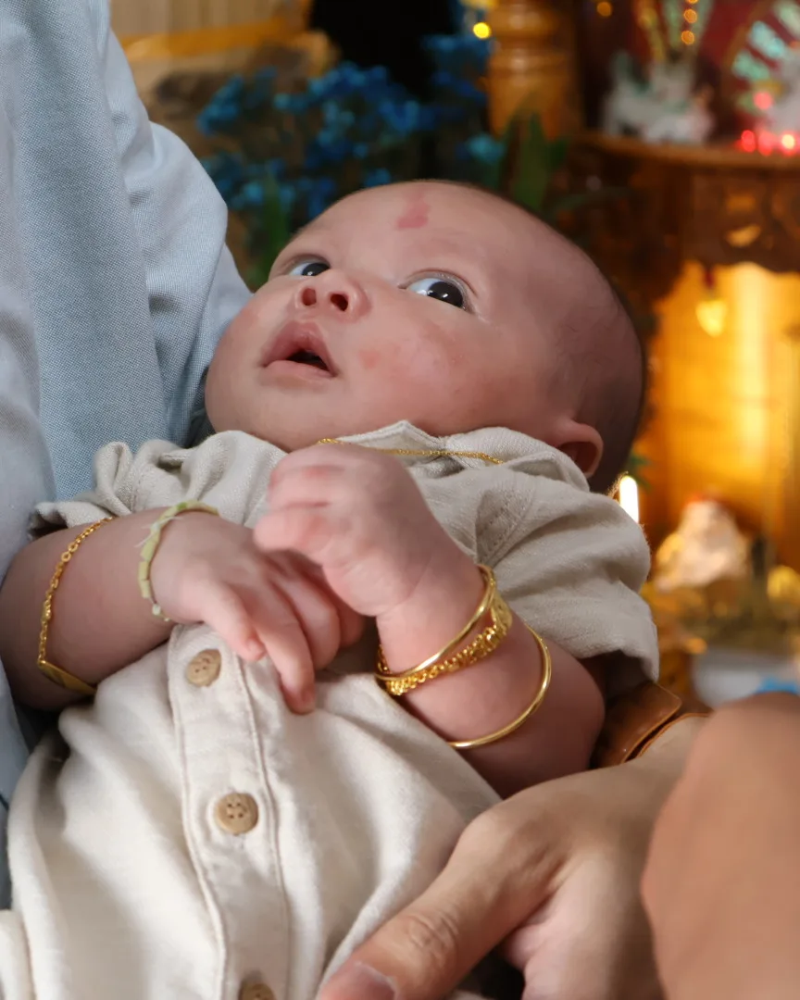
Trong vòng tay yêu thương
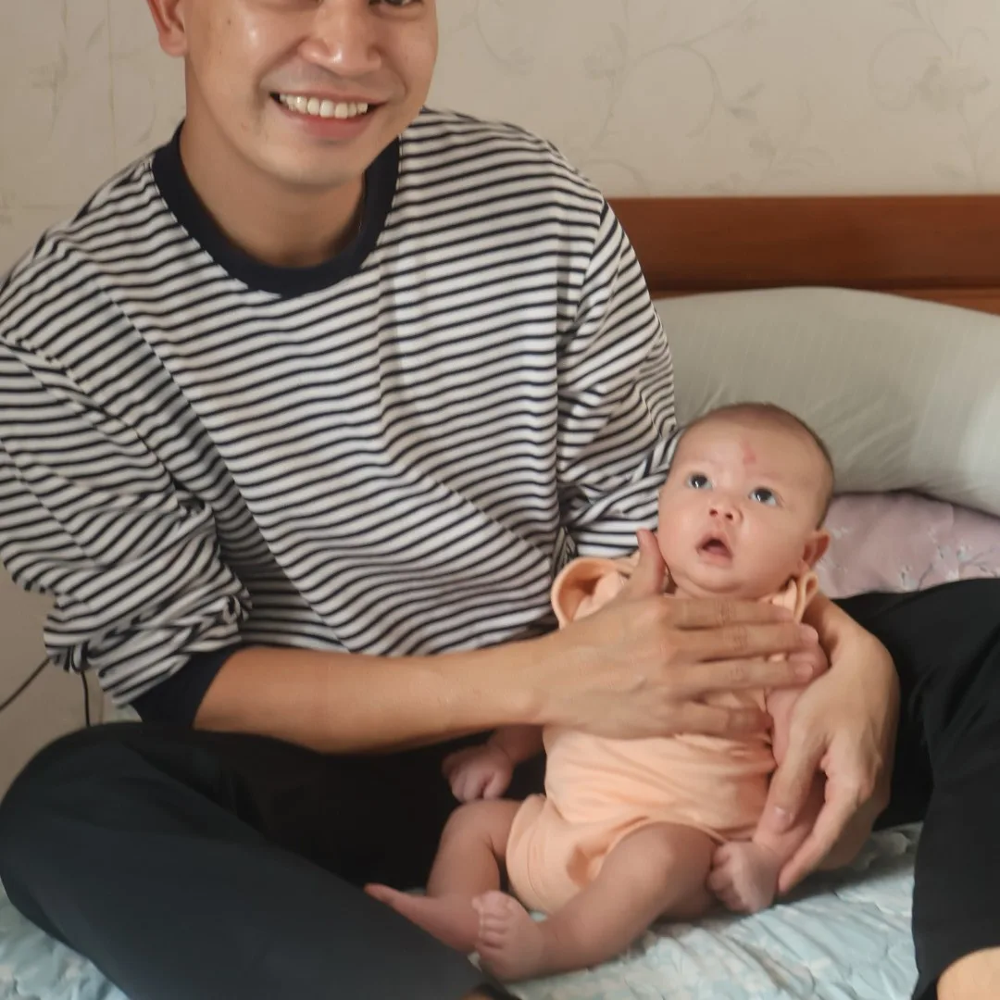
Cười thật tươi trong vòng tay ba
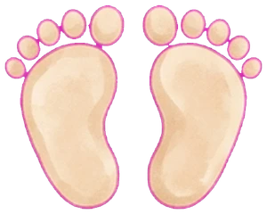
Cùng mẹ đi chơi xa
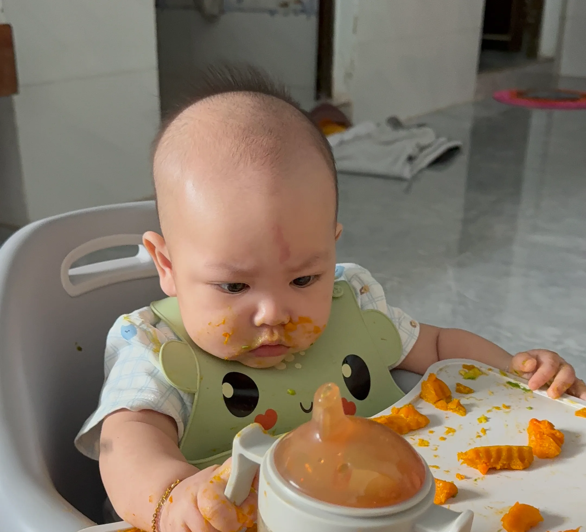
Ăn dặm ngon lành, dính đầy mặt
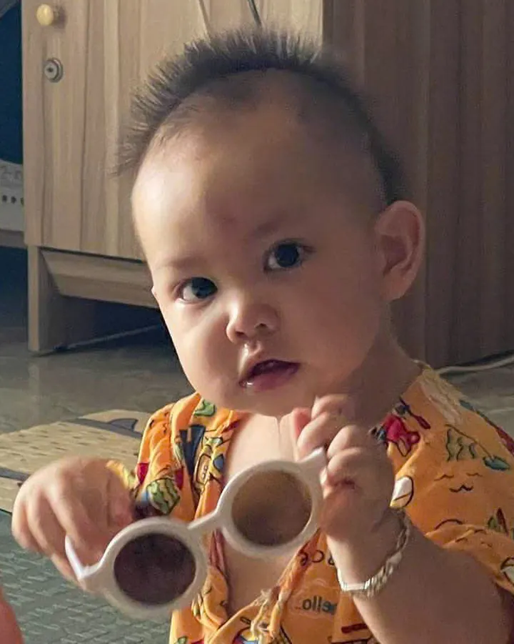
Tóc dựng, kính nhỏ, ngầu chưa!
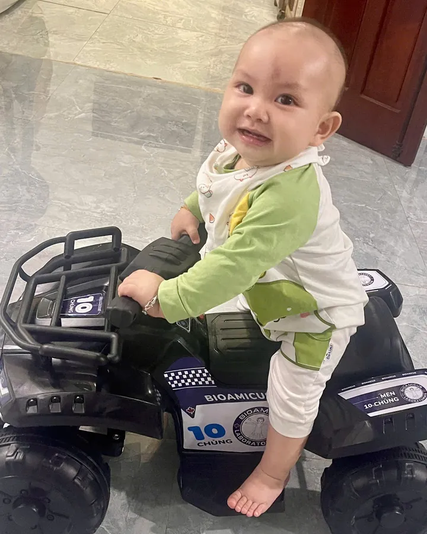
Lần đầu cầm lái, cười tít mắt
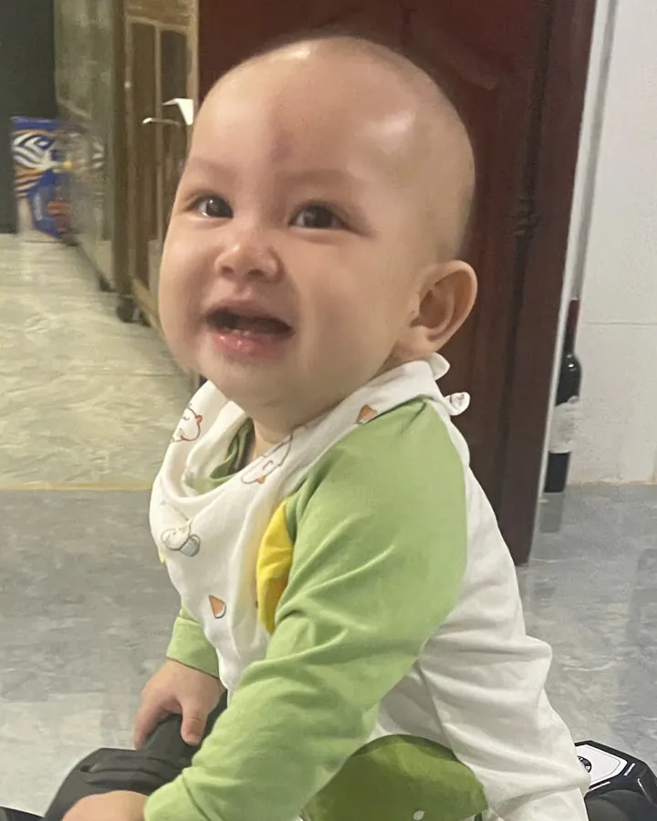
Nụ cười làm cả nhà tan chảy
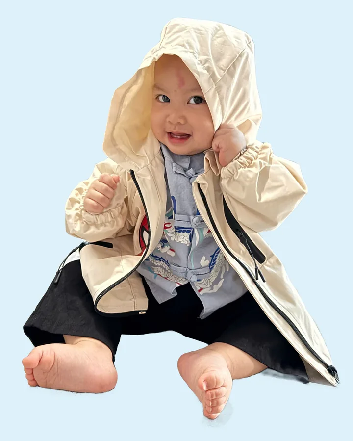
Áo rộng hơn người, vẫn điệu
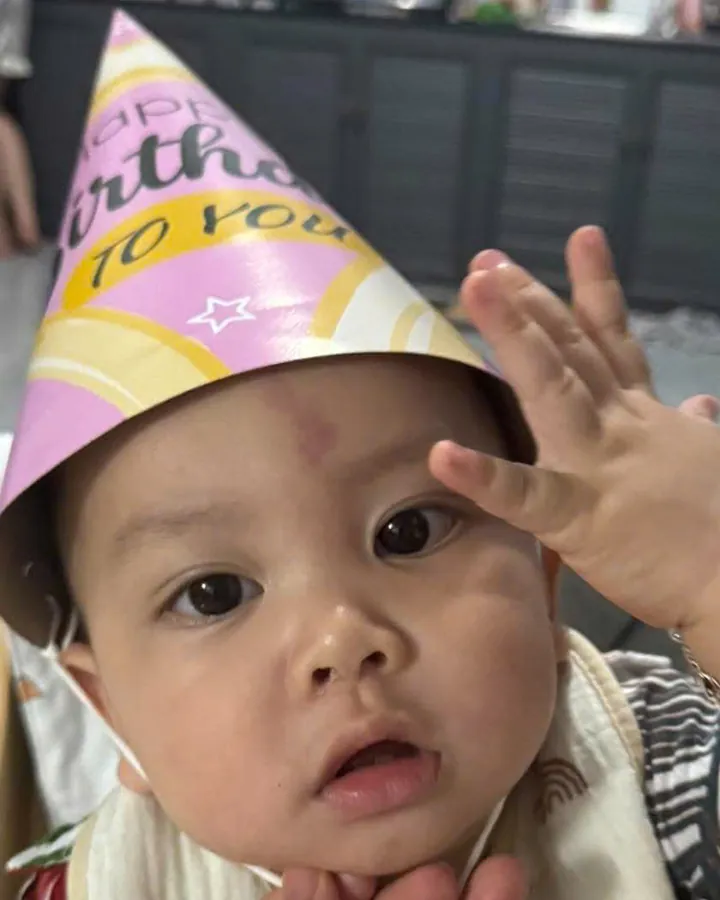
Và rồi, sắp một tuổi rồi đây
Chiếc xe yêu thích của Rio đỗ lại trên bờ cát
Chạm vỏ sò, xem Rio đã lớn thế nào
Rio gửi lời mời,
bạn gửi lại yêu thương
Những chai thư đã cập bến
Cảm ơn bạn
Sự hiện diện của bạn là món quà
ý nghĩa nhất với Rio.
Gia đình bé Rio
Thiệp online · templexa.vn